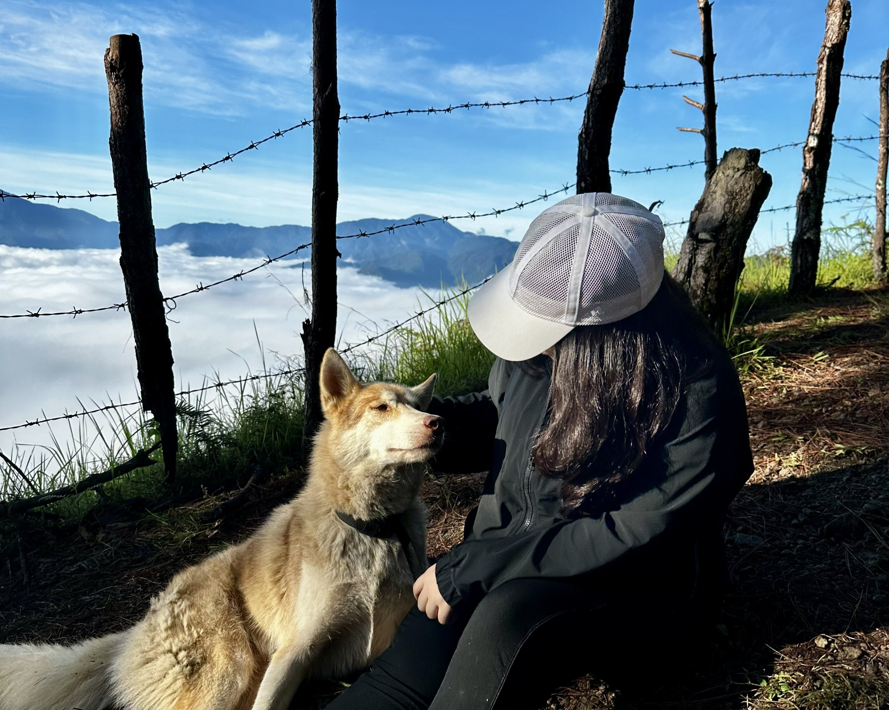
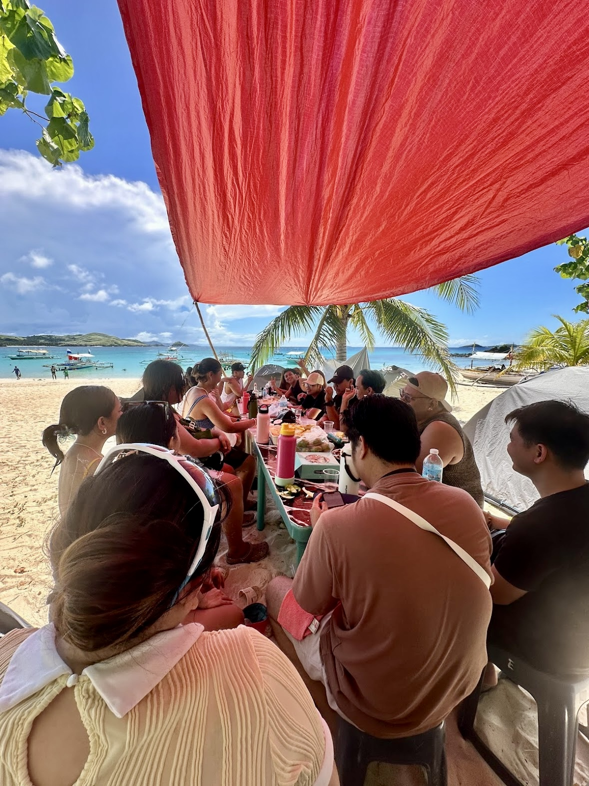
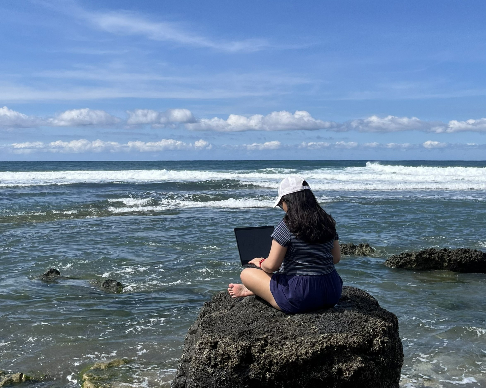
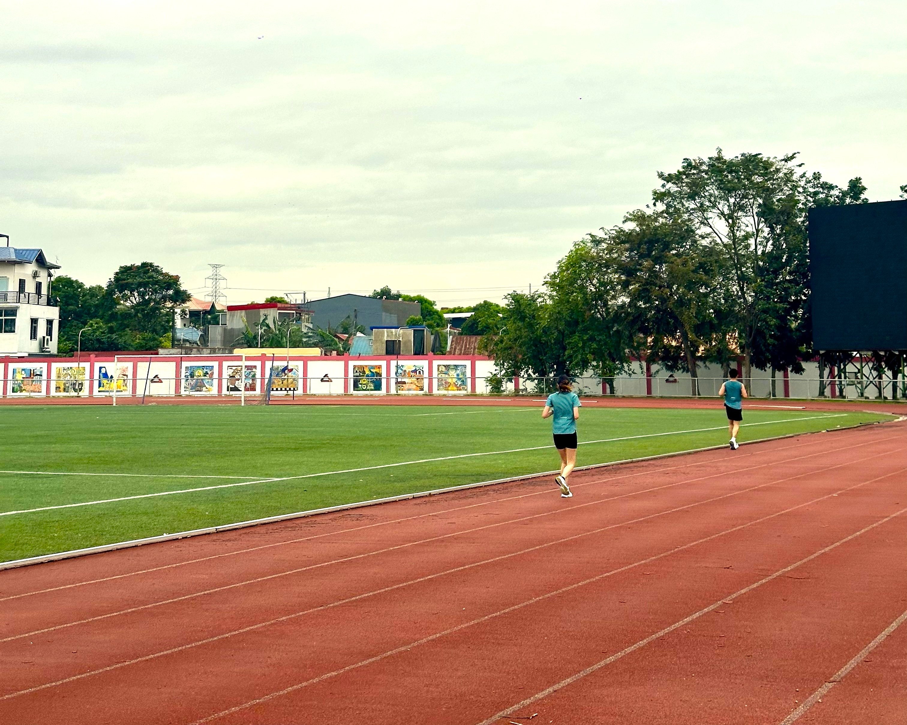
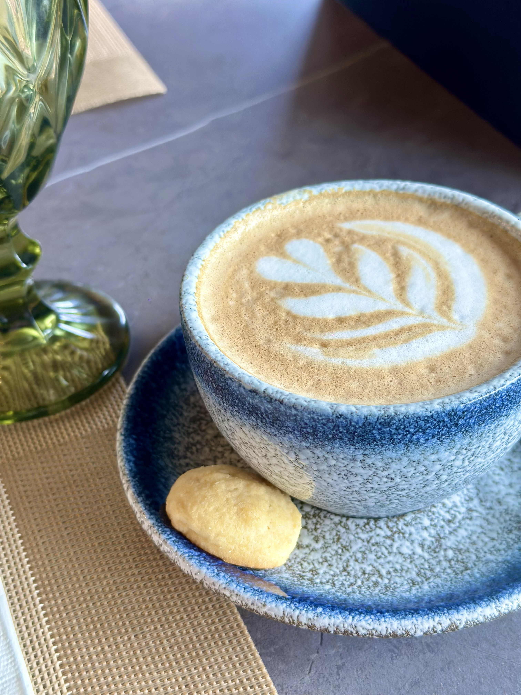

Exploration & Travel
Traveling, hiking, and walking allow me to explore new places and enjoy nature. I enjoy discovering different environments, chasing sunsets, and taking time to appreciate the outdoors.
Traveling, hiking, and walking allow me to explore new places and enjoy nature. I enjoy discovering different environments, chasing sunsets, and taking time to appreciate the outdoors.
I enjoy spending time with friends, whether it’s hanging out, catching up over coffee, or simply relaxing together.
In my free time, I enjoy playing online games and learning new things, especially about technology and digital tools.




